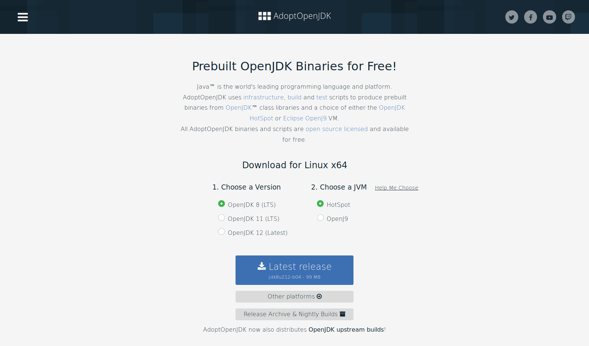
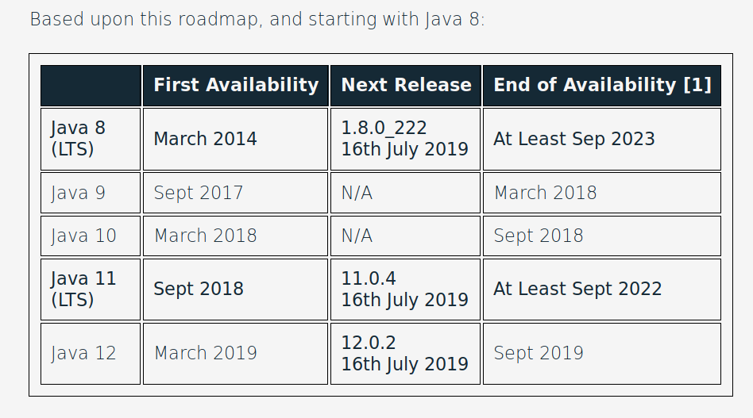

Photo by Benjamin Earwicker
Another photo
lorem
Power Catch-up
Everything Practical and Important in Java 9 to 13
tl;dr
[Support Modell: https://craftsmen.nl/java-11-is-here-to-stay/]
» Everything-is-so-awful™ «
Oracle Java 8 installations are dead!
Unmaintained: No $free & security- & bugfix updates.Always only 1 supported Oracle Java
Every 6 months new major version;
predecessor expire the same dayYou must always pay in production for Oracle Java
Love, peace & happiness…
Starting with Java 11
Oracle themselves releases OpenJDK
( but only 6 month support cadence)OpenJDK defacto identical to Oracle JDK
Numerous (new) OpenJDK-based options.
Some with $free support
OpenJDK Suppliers
AdoptOpenJDK (LTS: 4yr, 1yr overlap)
Red Hat (IBM) (v8: 2023 v11: 2024)
Amazon Corretto, Alibaba, Azul Zulu, SAP, IBM, BellSoft, jClarity, Distributionen, …
tl;dr: AdoptOpenJDK

LTS Support for Java 8 (2023) & 11 (2022) & ff.
AdoptOpenJDK – Sponsors
AdoptOpenJDK – Plattforms
AdoptOpenJDK – Support Timelines

Agenda
Java 9—13 Overview
Language
API
Tooling
Java 14 & beyond
v12+ & Preview Features: 12 13 preview
Java 9—13 in a nutshell
v9 (huge…)
Java module (Jigsaw)
API Improvements: Project Coin Milling, Stream, …
Unified JVM & Java Logging, …
Performance
Tools:
jshelljlink-release, Multi-Release JARs
2017-03-23, 91 JEPs
v10
var: Local-Variable Type InferencePerformance: GC, Class-Data Sharing, Threads, …
Experimental: Graal AoT-Compiler
2018-03-20, 12 JEPs
v11 [LTS]
New HTTP/2- & Websocket-Client
New GCs: Low-latency ZGC, No-op Epsiolon GC
Ex-payware: Flight Recorder, ZGC, CDS, …
→ Oracle JDK ≌ OpenJDKDropped: Java EE, JavaFX, CORBA
HTML5 Javadoc, Unicode 10, …
Updated Crypto: TLS 1.3, new Kex & Ciphers
2018-09-25, 17 JEPs
v12
Low-pause GC „Shenandoah“
Microbenchmark Suite
Preview: Switch Expressions
Performance improvements
(CDS, G1 GC, Constants)
2019-03-19, 8 JEPs
v13
Updated Preview: Switch-Expression
Preview: Text Blocks
Performance improvements
(AppCDS, ZGC, Socket)
2019-09-17, 5 JEPs
Language
Local Variable Type Inference JEP 286
New reserved Java type
var„real type“ inferred by compiler on first initialization
can denote classes (
Integer) & primitives (int)only available for local variables
var primitiveVal = 5; // int
var doubleVal = 5d; // double
final var sl = new ArrayList<String>();
var letters = "";
for (var s : sl) {
letters += s.toLowerCase();
}
// var: enable annotation w/ type infer
(var x, @NotNull var y) -> x + y;Type Inference — Bordercases
// var wontCompile; (1)
// var wontCompile = null;
// var wontCompile = {-1, 1};
var myMap = new HashMap<>();
myMap.put(42, "The answer");
// var wontCompile = myMap.get(42).trim(); (2)
// var wontCompile = String::toUpperCase; (3)
var myPredicate = new IntPredicate() {
public boolean test(int value) { return value > 0; } };
// myPredicate = (int i) -> (i % 2) == 0; (4)| 1 | Type must be inferrable – no late init, null or array literals |
| 2 | Type inferred at declaration time: Map<Object, Object> |
| 3 | Method references must be explicit |
| 4 | Anonymous Types are types-per-instance; therefore no reassignment |
Lambda Type inference JEP 323
// JDK8
MyLambda myLambda = (x, y) -> x + ((y != null) ? y : 0);
myLambda = (Long x, @NotNull Long y) -> x + y;
// JDK11: `var` style → type infer with annotations
myLambda = (var x, @NotNull var y) -> x + y;Type inference: Styleguide
Milling Project Coin JEP 213
Try-with-resources now support „effectively final“ variables
var inputStream = new FileInputStream(".gitignore");
try (inputStream) { … }Private methods in Interfaces
interface Version {
byte[] digits();
default String text() { return text(digits()); }
private String text(byte[] version) { … }
}Allows default methods share common code
Diamond operator for anonymous inner classes
Comparator<Integer> compareLongs = new Comparator<>() { … }@SafeVargs on private instance methodsprivate List<String> safeVarargsMethod(List<String>... lists) { … }Preview features Preview 12
Unlock Compilation
javac --release xx --enable-previewUnlock Execution
java --enable-preview …
xx must exactly match used JDK version
switch in Java 8
enum Direction {N, S, W, E}
String switchExpressionJDK8(Direction way) {
String result;
switch (way) {
case N:
result = "Up";
break;
case S:
result = "Down";
break;
case E:
case W:
result = "Somewhere left or right";
break;
default:
throw new IllegalStateException("Huh?: " + way);
}
return result;
}Switch-Expression JEP 325 12 JEP 354 13 Preview
String switchExpressionPreview13(Direction way) {
return switch (way) { (1)
case N -> "Up"; (2)
case S -> { yield "Down"; } (3)
case E, W -> "Somewhere left or right";
// default -> "Foo" (4)
};
}| 1 | switch can be used as expression |
| 2 | → instead of : → no break; necessary! |
| 3 | Lambdas can be used to. For expressions they must yield a value 13 |
| 4 | default can be ommitted if a) no expression or b) enum with every value handled |
Text Blocks JEP 355 13 Preview
Java 8
Object obj = engine.eval(
"function hello() {\n" +
" print(\"Hi, world!\");\n" +
"}\n" +
"\n" +
"hello();\n"
);Java 13
Object obj = engine.eval("""
function hello() {
print("Hi, world!");
}
hello();
""");Leading space-Character identation removed
up to the most-left character in the block including the closing"""Normalizes line-endings to
\nand removes all trailing white spaces
Jigsaw JEP 201
Modules bundle together one or more packages and offer stronger encapsulation than jars
Allows scaled-down runtime → IoT & Container
Stronger:
publicinvisible to other modulesSad: No module versioning
Metadata:
/module-info.java:module com.mysql.jdbc {
requires java.sql; // Module dependency
exports com.mysql.jdbc; // Export module package → enables access
provides java.sql.Driver // SPI: Provide service instance
with com.mysql.jdbc.Driver;
}Jigsaw uses modules &
.jmod instead of Classpath & .jarjavac -mp modulepath ...
java -mp modulepath -m modulename/moduleclassServiceLoader & modules
public abstract class BillingService {
public static BillingService getInstance() {
return ServiceLoader.load(BillingService.class)
.findFirst().orElseThrow();
}
public abstract String takeMyMoney();
}public class MastercardBillingService extends BillingService { … }module anothermodule {
provides bentolor.BillingService
with bentolor.MastercardBillingService;
}→ Simply use via BillingService.getInstance()
It is too early to say whether modules will achieve widespread use outside of the JDK itself. In the meantime, it seems best to avoid them unless you have a compelling need.
Effective Java: Third Edition (2018)
— Joshua Bloch
— Joshua Bloch
API
Immutable Collection Factories JEP 269
List/Set/Map.of()/* Comment sections would break ... */
List<Integer> listOfNumbers = List.of(1, 2, 3, 4, 5/*, null*/);
Set<Integer> setOfNumbers = Set.of(1, 2, 3, 4, 5/*, 1*/);
Map<String, String> mapOfString = Map.of("key1", "value1", "key2", "value2");
Map<String, String> moreMaps = Map.ofEntries(
Map.entry("key1", "value1"),
Map.entry("key2", "value2")/*,
Map.entry("key1", "value3")*/
);Produces immutable collections. All methods fail on null values.
Set.of() and Map.of() break on duplicate (key) entries.
Immutable collection copy
List/Set/Map.copyOf()var listCopy = List.copyOf(originalList); // independent, immutable copy
var setCopy = Set.copyOf(originalList); // copy to other types
var mapCopy = Map.copyOf( … );
assert 3 == listCopy.size(); // ["a", "b", "a"]
assert 2 == setCopy.size(); // ["a", "b"]
// listCopy.add("z") // → UnsupportedOperationExceptionReal copies – independent from source vs. Collections.unmodifiable()
Files & I/O
var txtPath = Path.of("src", "test", "resources", "sample.txt"); (1)
Path newPath = Path.of("src/test/resources/newfile.txt");
String fileContent = Files.readString(txtPath); (2)
// → "Nostrum iure ullam."
Files.writeString(newPath, "Nostrum lore.", StandardOpenOption.CREATE); (3)
long firstMismatch = Files.mismatch(txtPath, newPath); // → 8 | JDK12 (4)| 1 | Directly create Path-instances |
| 2 | Hassle-free reading a file content into a string |
| 3 | …or writing into files |
| 4 | Find position of first mismatching bytes of two Files 12 |
Stream Enhancements
Transform with
dropWhile()&takeWhile()Generate with
iterate()&ofNullable())Redirect with
transferTo()Collect to immutables with
toUnmodifiableList(),… or invert filters with
Predicate.not()
Transform & Generate Streams
Modify with
dropWhile() & takeWhile()var stream = Stream.of(-1, 0, 1, 21, 42);
stream.dropWhile(i -> i < 2) // → [ 21, 42 ]
stream.takeWhile(i -> i < 2) // → [ -1, 0, 1 ]Redirect with
transferTo()new ByteArrayInputStream(buf)
.transferTo(System.out); // InputStream → OutputStreamGenerate with
iterate() & ofNullable()// Stream<T> iterate(seedValue, nextTest, applyFunc)
Stream.iterate(2, i -> i < 999, i -> i*i); // → [2, 4, 16, 256]
Stream.ofNullable(null); // [ ]
Stream.ofNullable("Hi"); // [ "Hi" ]Collectors
Dispatch a stream to two consuming Collectors with
teeing()double rms(Stream<Integer> numStream) {
return rms = numStream.collect(
Collectors.teeing(
Collectors.summingDouble(i -> i * i), // → sum
Collectors.counting(), // → n
(sum, n) -> Math.sqrt(sum / n) // Join into final result
)
);
}More new
Collectors goodness…Create immutable Stream copies with
toUnmodifiableList/set/Map()unpack nested values using
flatMap()filter out unwanted values using
filtering()
Predicate::notstream.filter(s -> !s.isEmpty)stream.filter(Predicate.not(String::isEmpty))stream.filter(not(String::isEmpty))Enhanced Optional
New
ifPresentOrElse(), or(), stream() and isPresent()var maybeInt = Optional.ofNullable( (Math.random()<0.5) ? 42 : null );
maybeInt.ifPresentOrElse( // … do either this or that
(n) -> System.out.println(n),
() -> System.out.println("Nada") );// Optional empty? → Build a new one on-the-fly…
var triedAgain = maybeInt.or( () -> Optional.of(-1) );// Provide a stream → [] or [42]
Stream<Integer> intStream = maybeInt.stream();// Yay! – complements isPresent()
assert maybeInt.isPresent() == !maybeInt.isEmpty();New ProcessHandle and ProcessBuilder
Process sleeper = new ProcessBuilder("sleep", "10s").start();
ProcessHandle sleepHandle = sleeper.toHandle();
// Perform Runnables on process exit
sleepHandle.onExit().thenRun( // → CompletableFuture
() -> out.println("`sleep` process exited") );
out.println(sleepHandle.info());
// → [user: ben, cmd: /bin/sleep, args: [10s], startTime:…, totalTime: …]
// Find …
ProcessHandle jvm = ProcessHandle.current(); // … JVM,
Stream<ProcessHandle> all = ProcessHandle.allProcesses(); // … all processes
jvm.children().forEach(out::println); // … or childs
// Kill …
sleepHandle.destroy();Enhanced Deprecation policy
@Deprecated now wears a forRemoval flag@Deprecated(since="1.2", forRemoval=true)
public final synchronized void stop(Throwable obj) {
throw new UnsupportedOperationException();
}jdeprscan: Scan Jars for deprecated usages$ jdeprscan commons-math3-3.6.1.jar
Jar file commons-math3-3.6.1.jar:
class org/apache/commons/math3/fraction/BigFraction uses deprecated method java/math/BigDecimal::divide(Ljava/math/BigDecimal;II)…;
class org/apache/commons/math3/util/MathUtils uses deprecated method java/lang/Double::<init>(D)V
class org/apache/commons/math3/util/Precision uses deprecated method java/math/BigDecimal::setScale(II)Ljava/math/BigDecimal;can filter for deprecated methods marked for removal
StackWalker
StackWalker.getInstance().walk(s ->
s.map( frame -> frame.getClassName()+ '/' +frame.getMethodName() )
.filter(name -> name.startsWith("de.bentolor"))
.limit(10)
.collect(Collectors.toList())
).forEach(out::println);HTTP/2 Client JEP 110 JEP 321
HttpClient client = HttpClient.newBuilder() (1)
.version(HttpClient.Version.HTTP_2) (2)
.connectTimeout(Duration.ofSeconds(3)).build();
URI uri = URI.create("https://www.exxcellent.de/");
HttpRequest req = HttpRequest.newBuilder(uri)
.header("Useragent", "MyDemo").GET().build();
var future = client.sendAsync(req, HttpResponse.BodyHandlers.ofString()) (3)
.thenApply(HttpResponse::body)
.thenAccept(System.out::println);
var expensiveOperation = Math.pow(12345, 9876); // meanwhile do sth. else…
future.get(); // wait for completion of the background request| 1 | Fluent API and Builder Pattern |
| 2 | Standardized HTTP client capable of HTTP/2 and WebSocket connections! |
| 3 | Start asynchronously HTTP requests in the background |
WebSocket client
var wsBuilder = HttpClient.newHttpClient().newWebSocketBuilder();
var wsFuture = wsBuilder.buildAsync(URI.create("wss://echo.websocket.org"),
new WebSocket.Listener() {
onOpen(webSocket) { … }
onText(webSocket, data, last) { … }
onBinary(webSocket, data,last) { … }
onPing(webSocket, message) { … }
onPong(webSocket, message) { … }
onClose(webSocket, statusCode, reason) { … }
onError(webSocket, error) { … }
});
WebSocket websocket = wsFuture.join();
websocket.sendText("Ping!", true);
websocket.sendClose(NORMAL_CLOSURE, "Goodbye!").join();Reactive Streams
java.util.concurrent.Flow
JDK Standard of https://www.reactive-streams.org
for asynchronous stream processing
with non-blocking backpressure
Deprecation of finalize()
Motivation
Finalizers are inherently problematic and their use can lead to performance issues, deadlocks, hangs, and other problematic behavior.
No forRemoval=true yet — probably for long!
New way: Register Cleaner services for your objects.
They will receive PhantomReference to objects which are no longer reachable.
String enhancements
Java 11: Adopting new
Character.isWhitespace()" \tword\u0019 \r".trim() // → "word"; (Java 8)
// New methods based on `Character.isWhitespace(char)`
" \tword\u0019 \r".strip() // → "word\u0019"
" \tword\u0019 \r".stripLeading() // → "word\u0019 \r"
" \tword\u0019 \r".stripTrailing() // → " \tword\u0019"
" \t".isBlank() // → trueJava 12 utilities 12
"hi\r\n you!".indent(2) // → " hi\n you!\n");
"hi\r\n you!".indent(-1) // → "hi\n you!\n");
Stream<String> l = "1\n2\n3\n!".lines();
IntStream stream = "word".chars();
"ABC".transform(String::toLowerCase), "abc");JDK API Changes
Tooling
REPLS: jshell JEP 222
$ jshell
| Welcome to JShell -- Version 13-ea
| For an introduction type: /help intro
jshell> "HI"
$1 ==> "HI"
jshell> var hi = $1.to
toCharArray() toLowerCase( toString() toUpperCase(
jshell> var hi = $1.toLowerCase()
hi ==> "hi"
jshell> String twice(String s) {
...> return s + s;
...> }
| created method twice(String)
jshell> var hihi = twice(hi)
hihi ==> "hihi"
jshell> /vars
| String $1 = "HI"| String hi = "hi"
| String hihi = "hihi"
jshell> /methods
| String twice(String)
jshell> /edit twice
| modified method twice(String)
jshell> /list
1 : "HI"
2 : var hi = $1.toLowerCase();
4 : var hihi = twice(hi);
5 : String twice(String s) {
return "Double Time: "+ s + s;
}
jshell> /4
var hihi = twice(hi);
hihi ==> "Double Time: hihi"
jshell> /save twice twice.jshSingle Source File Launch JEP 330
Directly execute Java source in File
hello (no .java-Suffix!)#!/usr/bin/java --source 11
public class SingleClassJava {
public static void main(String[] args) {
System.out.println("Hello " + args[0] + ". Executable .java – Yay!");
}
}$ chmod +x hello
$ ./hello world
Hello world. Executable .java – Yay!or launch any single-class Java file:
$ java SingleClassJava.java worldJVM Logging & Log rerouting
$ java -Xlog:os="debug,gc*=debug:stdout:pid,level,tags" SingleClassJava.java
[30911][debug][os] Initial active processor count set to 4
[30911][info ][os] Use of CLOCK_MONOTONIC is supported
[30911][debug][gc,ergo,heap ] Attempt heap expansion (allocate archive regions). Total size: …
[30911][info ][gc,cds ] Mark closed archive regions in map: [0x00000007bff00000, … ]JVM Log rerouting JEP 264
Allows applications to provide custom logger implementations
to be used by platform classes.
Flight Recorder JEP 328
Production-
Profiling & MonitoringFormer Oracle payware
Open-sourced with Java 11Flight recording start
on new & runningjavaRules → Alerts
Microbenchmark Suite JEP 230 12
@BenchmarkMode(Mode.AverageTime)
@OutputTimeUnit(TimeUnit.MICROSECONDS)
@State(Scope.Thread)
public class BenchmarkIntegers {
@Param("500")
private int size;
private String[] strings;
@Setup
public void setup() {
Random r = new Random(0);
strings = new String[size];
for (int i = 0; i < size; i++) {
strings[i] = "" + (r.nextInt(10000) - 5000);
}
}
@Benchmark
public void parseInt(Blackhole bh) {
for (String s : strings) {
bh.consume(Integer.parseInt(s));
}
}
}Based on
jmhAvoids JIT Falltrips
Start via Maven Archteype
jlink / jdeps JEP 282 JEP 220 JEP 275 JEP 200 JEP 201 JEP 260
Most interesting Part of Java 9 / Jigsaw!
Minimize size with
jlink LinkerBuild optimized, slim run-time image for modular Java application with minimal JRE
List package dependencies with
jdepsjdeps app.jar
+ better Container-Awareness
Support of Docker CPU and memory limits.
Packaging
Conveniently compile for older Java with --release
Replaces: javac -source N -target N –bootclasspath rtN.jar
Packaging: Multi-release JAR JEP 238
JAR Files can now contain multiple, version-specific versions classes
HTML5 Javadoc JEP 221 JEP 224 JEP 225
Enable via
-html5parameterSearch box for easy navigation
HTML5 output; no more frames
Improved DocLint:
-Xdoclint/package:java.,javax.
Performance
Compact Strings JEP 254
Use ISO-8869-1 (1 byte/character) when possible
Now default GC
Multi-threaded Full GCs
Minimzes Stop-the-world Pauses
Deduplicates String
Epsilon GC
No-Op Garbage Collector (short-living JVMs)
Java 14 & beyond
Project Metropolis

GraalVM — Polyglot VM JEP 243 JEP 246 JEP 295
Ahead-of time compiler (AoT)
Generic VM
for different languages
→ JVM (Java, Kotlin, Scala, …)
→ LLVM (C, C++) → native
→ Java Script, Python, Ruby, R
Shared Runtime → Zero overhead for language interop
Native executables
(GraalVM on SubstrateVM)
→ Much smaller startup & memory
AoT can be used today:
java -XX:+UnlockExperimentalVMOptions -XX:+EnableJVMCI -XX:+UseJVMCICompiler
Simplyfing Syntax: Amber
Pattern matching for
instanceof JEP 305if (obj instanceof String s) {
return s.contains("abc")
}Unamed lamda parameters JEP 302
(i, _) -> String.valueOf(i);Data Classes & Sealed Types
record Point(int x, int y) { }Value Types: Valhalla
JVM infrastructure for working with immutable and reference-free objects, for efficient by-value computation with non-primitive types.
Value Object: Immutable & Final
value class Rectangle { int width,height; }t(L1(/L2 Cache) << t(RAM): → Similar performance to primitives
Benefits of immutables: Functional-style computations, shareability, …
Lightweight concurrency
Continuations
Fibers (JVM „threads“)
Tail-call elimination
Continuation cont = new Continuation(SCOPE, () -> {
while (true) {
System.out.println("before");
Continuation.yield(SCOPE);
System.out.println("after");
}
});
while (!cont.isDone()) {
cont.run();
}Similar to cooperative multitasking or Kotlin’s Coroutines…
Resources
OpenJDK Suppliers
Contact
Twitter @bentolor
Image & Video Source
These slides with all links
https://bit.ly/2KPvyZh
Cleanups
JDK: Cleanup
Java EE removed
CORBA removed
Internal API’s (
sun.*) removed / deprecatedapple.applescript&com.appleremovedDisable X.509/SHA-1 certificate chains
Remove Launch-Time JRE Version Selection directives
Removed
Thread.destroy()andThread.stop()Deprecate Applet API
Deprecate Nashorn Javascript Engine
Deprecate Object.finalize()
Language: Cleanup
var&_no longer a valid identifier
Tooling/JVM: Cleanup
Remove
jhatRemove hprof Agent
Remove old GC Combinations
Remove
javahRemove
lib/endorsed&lib/extReplace rt.jar
ResourceBundle loads properties files in UTF-8 instead of ISO-8859-1
Deprecate CMS GC
Deprecate Pack200
Security / TLS / Crypto
Validate Incoming Serialization Data JDK 9
Default keystore type is the standard PKCS12 instead of the proprietary JKS JDK 9
Default set of root Certification Authority (CA) certificates are provided with the JDK, so TLS connections are working out of the box JDK 10
DRBG-Based SecureRandom JDK 9
Disable X.509 certificate chains with SHA-1 based signatures JDK 9
SHA-3 Hash Algorithms JDK 9
TLS 1.3 support JDK 11
API for Datagram Transport Layer Security (DTLS) JDK 9
OCSP stapling TLS to improve performance of certificate status checking JDK 9
TLS Application-Layer Protocol Negotiation (ALPN) Extension which enables protocol negotiation without additional round trips; ALPN is a requirement for HTTP/2 connections JDK 9
Key Agreement with Curve25519 and Curve448 JDK 11
ChaCha20 and Poly1305 Cryptographic Algorithms JDK 11
Internationalization
ResourceBundle loads properties files by default in UTF-8 instead of ISO-8859-1.
Overide via system propertyjava.util.PropertyResourceBundle.encodingJEP 226Unicode 10.0, adding roughly 27.000 characters, 10 blocks, and more than 30 scripts. JEP 267 JEP 327
java.util.Locale and related APIs support currency type, time zone and more. JEP 314
Locale-specific operations now uses by default data provided by Unicode, no longer Oracle-provided. JEP 252
.Graphics and Desktop Applications
Desktop features for all platforms like login/logout/lock event listener and task bar interactions JDK 9
MultiResolutionImage that makes easy to retrieve a resolution-specific image for a DPI JDK 9
HiDPI Graphics on Windows and Linux JDK 9 https://openjdk.java.net/jeps/263
Enable GTK 3 on Linux for JavaFX, Swing, and AWT JDK 9 https://openjdk.java.net/jeps/283
Replace @beaninfo Javadoc tags with @BeanInfo annotations for Swing JDK 9
Update GStreamer included in JavaFX/Media to version 1.4.4 JDK 9
Replace the existing ICU OpenType font-layout engine with HarfBuzz JDK 9